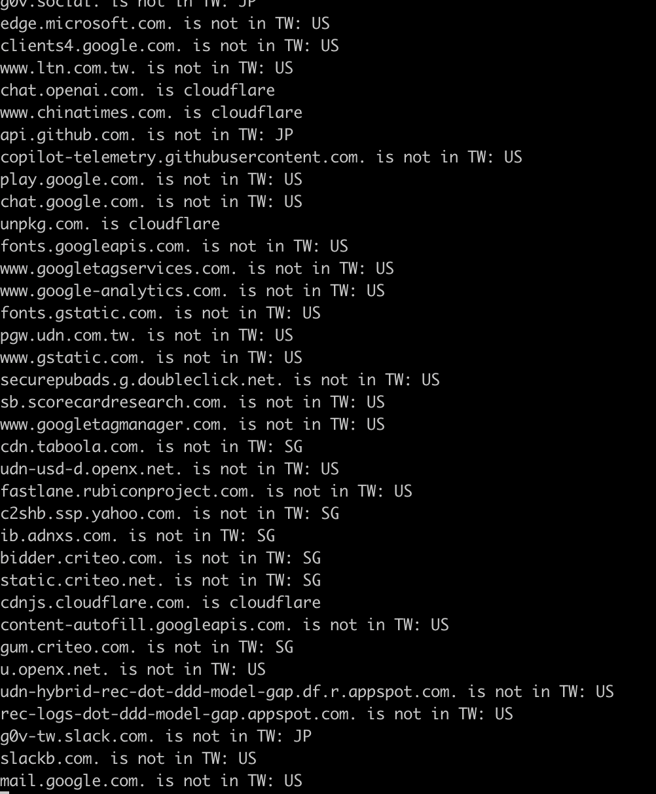
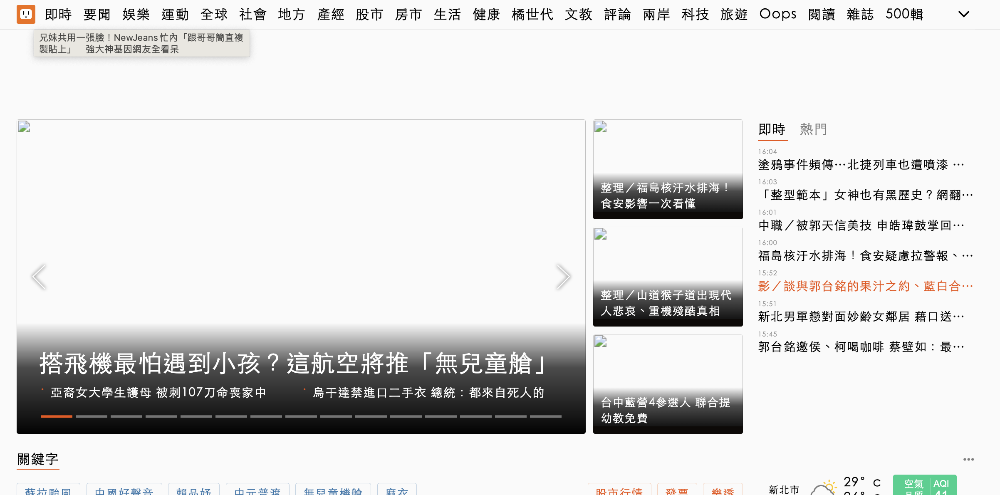

<hr />
<h2>tags: 民防</h2>
<h1>20230826 戰時網路  @ 開源普渡黑客松</h1>
<h2>戰時網路模擬器</h2>
<p><a href="https://github.com/g0v/wardns">https://github.com/g0v/wardns</a>
純 Python ，可以自架在自己的本機上面
即時檢查是否有用到國外服務</p>
<p>謝謝 vax-r 幫忙 PR 修正
</p>
<h3>目前不能用的網站</h3>
<ul>
<li><a href="https://www.gov.tw/">https://www.gov.tw/</a></li>
<li><a href="https://moda.gov.tw/">https://moda.gov.tw/</a></li>
<li>新聞類
<ul>
<li>ltn, chinatimes 都不能連</li>
<li>udn 可以連，但是圖都過 cdn ，看不到</li>
<li></li>
<li>cna 都正常，只有 google 廣告不見了</li>
</ul></li>
</ul>
<p>待檢查</p>
<ul>
<li>防災宣導網站 <a href="https://easy2do.ncdr.nat.gov.tw/together/">https://easy2do.ncdr.nat.gov.tw/together/</a></li>
<li>g0v 基礎建設相關？<a href="https://docs.google.com/spreadsheets/d/1C9-g1pvkfqBJbfkjPB0gvfBbBxVlWYJj6tTVwaI5_x8/edit">清單</a></li>
</ul>
<h2>盤點哪些服務在戰時是重要的，要有替代方案</h2>
<ul>
<li>防空避難所位置 <a href="https://adr.npa.gov.tw/indexgo">https://adr.npa.gov.tw/indexgo</a>
<ul>
<li>可以用 maps.nlsc.gov.tw 當地圖圖資</li>
</ul></li>
<li>新聞網站？</li>
<li>通訊軟體？</li>
<li>在學術網路架設 mastodon 當作戰時替代？</li>
<li>ptt？(有 .tw 結尾的 domain 嗎？)</li>
</ul>